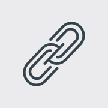
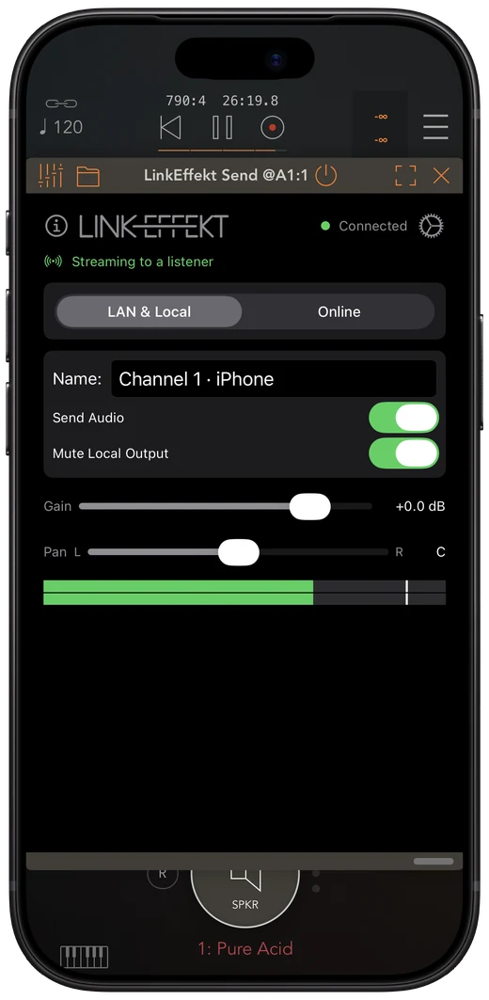
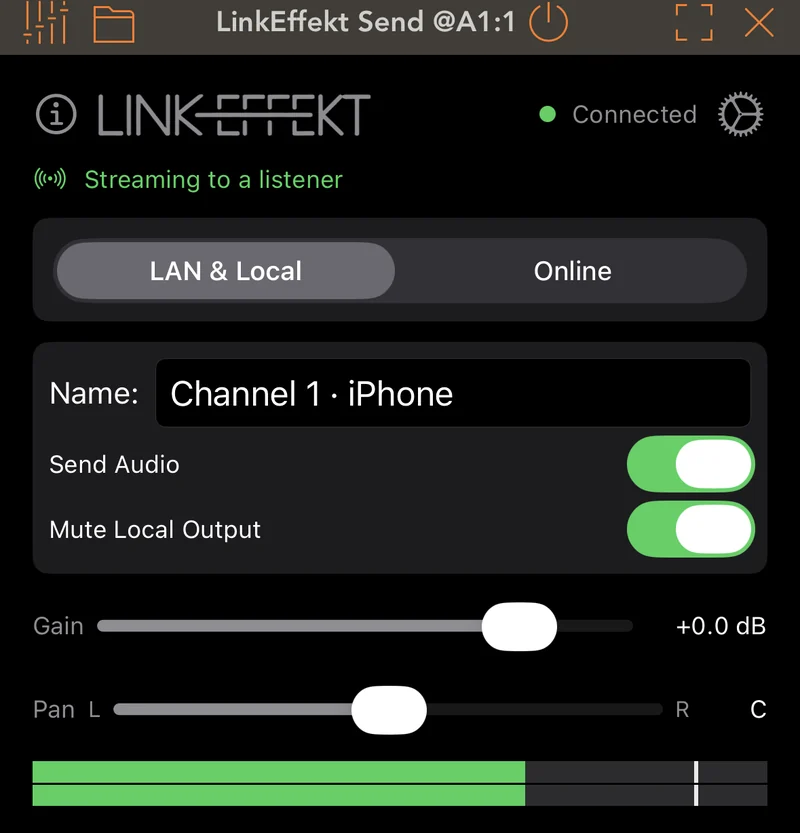
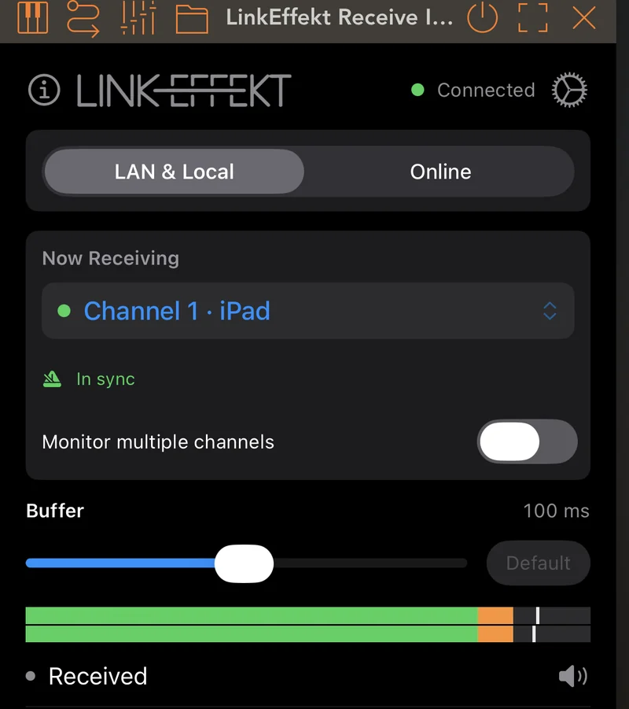
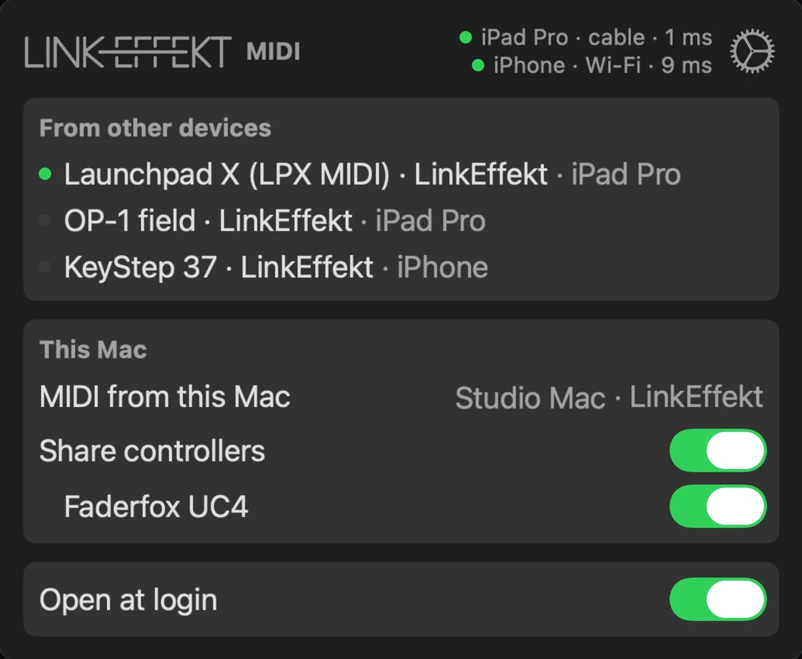

Link Audio and MIDI
everywhere.
LinkEffekt streams audio and MIDI between your apps, iOS devices and Mac in sync.

Free to start on iPhone and iPad. Read the manual


The routing tool for your whole setup.
Load a Send on one device and a Receive on the other. In AUM and Logic Pro both directions are in sync over Wi-Fi or a cable with nothing to set up.
Each iPad track shows up in Ableton Live 12.4 or later as its own Link Audio channel, with no audio interface in between.
Live’s tracks play in your iPad host. Bar Sync locks them to your bar.
From one app into another on the same device in sync and with almost no delay. No Wi-Fi and no Link setup.
Create a room, share the code and jam over the internet. Bar Sync delays by whole bars, so your partner’s “1” lands on your “1”.
Connect your controllers to any iOS device or Mac and they work anywhere. Controllers and other MIDI gear get virtual ports so you keep all your mappings.
Gear plugged into your iPad, iPhone or Mac gets MIDI clock from Ableton Link with its own offset for each piece.
In sync or locked to the bar.
AUM
Logic Pro
The audio arrives in sync with the receiving app in both directions of a jam.
Cubasis, Drambo, Loopy Pro, Koala, GarageBand, djay
In every other host Bar Sync locks the incoming downbeat to your bar. One bar later and rock-solid even over the internet.
It runs inside the host you already use.
Load LinkEffekt as a plugin in any AUv3 host. No standalone routing app.


- LinkEffekt Send
- Insert it on a track to stream that track. Each instance is its own named channel.
- LinkEffekt Receive
- Pick a channel and hear it in every host.
- LinkEffekt Receive Instrument
- The same receiver as a sound source, for AUM source slots and instrument tracks.
- LinkEffekt MIDI
- Brings the controllers of all your devices into your host, each on its own output.
New in 2.1: your controllers on every device.

Connect your MIDI controllers to any iOS device or Mac and they work anywhere.
On the Mac LinkEffekt lives in the menu bar and gives every app a virtual port for each piece of MIDI gear. Plug it into another device and your mappings stay.
Gear without Ableton Link gets MIDI clock from Link with its own offset to keep it tight.
Free to start, one purchase for everything.
Free
- One Send and one Receive on your network
- Link to MIDI clock for one piece of gear
- No account, no ads
LinkEffekt Unlimited
A one-time purchase, €14.99 in the App Store.
- Unlimited instances
- Several channels per Receive
- Online mode
- MIDI between your devices
- Link to MIDI clock for all your gear
- Unlimited virtual MIDI ports on the Mac
iOS 15 or later on iPhone and iPad, in any AUv3 host. Ableton Live 12.4 or later on the same network sends and receives. MIDI on a Mac needs Apple Silicon and macOS 14 or later.
Try LinkEffekt for free.
On iPhone and iPad, in the host you already use. Read the manual